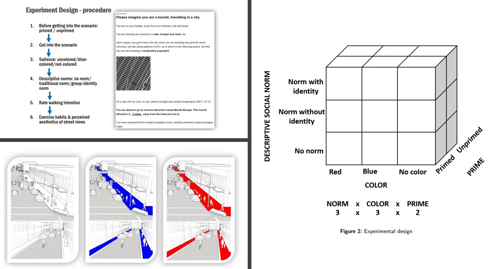

Can Colored Sidewalk Nudge City Tourists to Walk? An Experimental Study of the Effect of Nudges
Chen, J.,
Lehto,
X.,
Lehto,
M.,
& Day, J.
In Tourism Management, 95, 104683.
Long story short：
Sedentary lifestyles are on the rise globally. The World Health Organization has identified the lack of physical excise as an urgent global wellness issue to be addressed. Encouraging people to participate in moderate-intensity physical activity consequently has become a public health priority. Against these backgrounds, our study conducted an experiment to investigate how to nudge people to walk. The fundamental proposition is that making small changes to the built environment and social environment will promote people’s walking desire. More specifically, we assume increasing the salience of sidewalks by painting them in colors can increase people's walking interest, by grabbing their attention to the walkways and triggering their positive emotions to participate into the walking activity. To study this proposition, one part of our experiment compared people's walking interests when sidewalks are colored and uncolored. In addition, we explored the effect of priming on people's choices and behaviors. Specifically, we wanted to know whether priming people by first letting them see walking shoes plays a role in nudging them to walk. In this second layer of our experiment, we compared participants' walking interest between those who are primed and those who are not primed with walking shoes. Third, this study also considered the effects of social norms on people's walking behavior. That is, we further compared people's interest in walking when social norms are absent or present. We aim to increase public awareness of welling being and call for an increased level of physical activity as a society.
Work:
- Designed a 3 x 3 x 2 full-factorial between-subject online experiment
- Designed a main scenario and several sub-scenarios for each experiment
- Designed scales to measure key dependent variables and control variables
- Developed questionnaires for participants’ responses and feedback
- Implemented quality control for data collection
- Recruited 2,160 online participants
- Responded to emails relating to participants' questions
- Conducted manipulation check
- Conducted Three-Way ANOVA analysis
- Conducted Multivariate analysis of variance (MANOVA)
- Conducted a series of one-way ANOVA
- Conducted post hoc test
- Conducted Ordinary Linear Regression analysis
- Conducted Mediation Analysis
- Summarized research data into tables, graphs and narratives
- Explained research and research results to the public
- Gave talks in conferences and workshops
- Improved pedestrian experience (attitudes, interest, and emotions) of walking by 5%
Research clips:
(Experiment)  (Data Analysis)